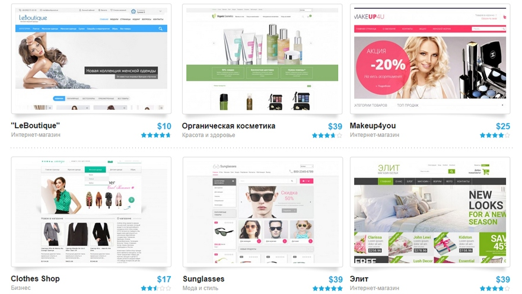

Программное обеспечение для разработки сайтов


uCos
Обзор конструктора сайтов uCoz
uCoz – один из тех конструкторов, которые задают вектор развития всей ниши.
Более 12 лет успешной работы, первые позиции в рейтингах, многомиллионная
аудитория и постоянное развитие свидетельствуют в пользу благонадёжности платформы.
Универсальность сервиса подкупает как профессионалов так и новичков сайтостроения.
Представляем вашему вниманию детальный обзор uCoz – лучшего конструктора сайтов Рунета.
Оглавление
1
Дизайны и работа с шаблонами
uCoz – не совсем обычный конструктор. Его возможности правильнее рассматривать не цельно и в совокупности,
а используя блочный подход. Система состоит из разноплановых модулей, связанных единым интерфейсом и большим
количеством общих, дополнительных настроек и возможностей. Можно ими пользоваться, а можно оставить неактивными.
Таким образом, Юкоз будет таким, каким он нужен для решения задачи пользователя. При этом, любой из модулей
максимально полно отрабатывает функционально задачу, под решение которой заточен.
Говоря об универсальности в случае с Юкозом, мы имеем ввиду не формальную возможность создания большого количества типов сайтов на уровне «вроде как можно, но лучше не нужно», а полноценную. Модули, несущие характерный функционал вроде блога, интернет-магазина или форума являются мощными приложениями с большим количеством полезных настроек. Их можно рассматривать в отдельности каждый как полноценную систему для решения одной конкретной масштабной задачи. Все модули реализованы одинаково хорошо.
Интерфейс этого конструктора не похож ни на один другой. Структура опций, дизайн панели управления и подача функционала своя, индивидуальная. Его ни с чем не спутать, потому что проект развивался своим путём, минуя общепринятые тренды и копирование чужих концепций. Модульная структура очень удобная, позволяет значительно упростить интерфейс и ускорить освоение системы.
Говоря об универсальности в случае с Юкозом, мы имеем ввиду не формальную возможность создания большого количества типов сайтов на уровне «вроде как можно, но лучше не нужно», а полноценную. Модули, несущие характерный функционал вроде блога, интернет-магазина или форума являются мощными приложениями с большим количеством полезных настроек. Их можно рассматривать в отдельности каждый как полноценную систему для решения одной конкретной масштабной задачи. Все модули реализованы одинаково хорошо.
Интерфейс этого конструктора не похож ни на один другой. Структура опций, дизайн панели управления и подача функционала своя, индивидуальная. Его ни с чем не спутать, потому что проект развивался своим путём, минуя общепринятые тренды и копирование чужих концепций. Модульная структура очень удобная, позволяет значительно упростить интерфейс и ускорить освоение системы.
2
Функциональные возможности
uCoz может предложить более 20 категорий шаблонов, общее количество которых находится в пределах 400+ экземпляров.
Бизнес, транспорт, мода и красота, образование, недвижимость, компьютеры и связь – несколько примеров названий
тематических разделов.
Качество системных шаблонов заметно варьируется. Есть как малоинтересные устаревшие варианты, так и явно классные,
современные образцы с адаптивным дизайном. Лучше всего выбирать стоит из новых шаблонов, они в любой категории
находятся вверху списка, не запутаетесь.
Самое интересное можно найти в официальном магазине шаблонов uTemplate.pro. Большой тематический ассортимент премиум-шаблонов, фильтрация для упрощения выбора и средняя стоимость в районе $15. Есть и бесплатные варианты. Кстати, любой из этих шаблонов можно получить в подарок, просто оплатив «Оптимальный» тариф Юкоза сроком на один год (+ подарят домен вида site.ru на ваш выбор). Поэтому есть смысл сразу ориентироваться на получение премиум-дизайна, минуя бесплатные шаблоны.
Самое интересное можно найти в официальном магазине шаблонов uTemplate.pro. Большой тематический ассортимент премиум-шаблонов, фильтрация для упрощения выбора и средняя стоимость в районе $15. Есть и бесплатные варианты. Кстати, любой из этих шаблонов можно получить в подарок, просто оплатив «Оптимальный» тариф Юкоза сроком на один год (+ подарят домен вида site.ru на ваш выбор). Поэтому есть смысл сразу ориентироваться на получение премиум-дизайна, минуя бесплатные шаблоны.

Отметим, что существуют студии, которые могут на заказ создать любой шаблон для вашего сайта на uCoz.
Конечно, стоимость индивидуальной услуги будет на порядок выше приобретения готового дизайна.
Тем не менее, для создания проекта А-класса может понадобиться на 100% уникальный вариант шаблона.
В Юкозе сделан огромный упор на возможность редактирования кода дизайна. Например, можно отдельно править
код страницы списка материалов, комментариев блога, формы входа на сайт. У каждого установленного модуля
в редакторе дизайна виден перечень доступных для внесения правок блоков и элементов.
То есть возможности по кастомизации практически ничем не ограничены для умеющих работать с кодом. Использование дополнительных скриптов позволит добиться невероятной масштабируемости uCoz-сайта в плане функциональности.
То есть возможности по кастомизации практически ничем не ограничены для умеющих работать с кодом. Использование дополнительных скриптов позволит добиться невероятной масштабируемости uCoz-сайта в плане функциональности.
3
Ценовая политика Mobirise (цены на тарифы)
Ценообразование услуг у Юкоза весьма гуманное. При оплате тарифов на длительный срок вперед, например,
на 6 мес., 12 мес. или 24 мес. получится хорошая скидка в 10%, 20% или 30% соответственно и, самое приятное,
бесплатно предоставят домен второго уровня (вида site.ru) +премиум шаблон в подарок на выбор!
Всего доступно пять платных тарифных планов:
1. «Минимальный» (от $2.10/мес) – уменьшенный рекламный баннер, +1 Гб места, базовый антивирус, неудаление сайта при отсутствии посещений, модуль Яндекс.Фиды.
2. «Базовый» (от $4.20/мес) – отсутствие рекламы, 2 Гб места, 1 обращение в премиум-поддержку, авторезервирование данных 1 раз в 2 недели.
3. «Оптимальный» (от $5.60/мес) – 10 Гб места, 2 обращения в техподдержку, премиум-антивирус, бесплатный премиум-шаблон и домен при оплате за год.
4. «Магазин» (от $7,00/мес) – 10 Гб места и полный функционал для интернет-магазина.
5. «Максимальный» (от $11.20/мес) – 20 Гб места, живой чат со службой техподдержки, авторезервирование каждые 3 дня.
Всего доступно пять платных тарифных планов:
1. «Минимальный» (от $2.10/мес) – уменьшенный рекламный баннер, +1 Гб места, базовый антивирус, неудаление сайта при отсутствии посещений, модуль Яндекс.Фиды.
2. «Базовый» (от $4.20/мес) – отсутствие рекламы, 2 Гб места, 1 обращение в премиум-поддержку, авторезервирование данных 1 раз в 2 недели.
3. «Оптимальный» (от $5.60/мес) – 10 Гб места, 2 обращения в техподдержку, премиум-антивирус, бесплатный премиум-шаблон и домен при оплате за год.
4. «Магазин» (от $7,00/мес) – 10 Гб места и полный функционал для интернет-магазина.
5. «Максимальный» (от $11.20/мес) – 20 Гб места, живой чат со службой техподдержки, авторезервирование каждые 3 дня.
Премиум-тарифы позволяют использовать все возможности uCoz по максимуму и без ограничений!
Полный перечень преимуществ платных тарифов смотрите в таблице с ценами.
В целом, выгоднее подключить тариф «Оптимальный» или «Магазин» в зависимости от необходимого вам типа сайта. Получите весь неограниченный функционал, премиум-шаблон, домен, SSL и, конечно, отсутствие баннера с рекламой. Также учитывайте, что цены при оплате от 3-х месяцев будут ниже приведённых базовых.
Отметим возможность полностью бесплатного использования uCoz. В таком случае можно получить 400 Мб дискового пространства, модули (без магазина и продвинутой версии SEO-модуля), а также рекламный баннер системы. Free подойдёт желающим ознакомиться с возможностями серьёзной системы без денег.
В целом, выгоднее подключить тариф «Оптимальный» или «Магазин» в зависимости от необходимого вам типа сайта. Получите весь неограниченный функционал, премиум-шаблон, домен, SSL и, конечно, отсутствие баннера с рекламой. Также учитывайте, что цены при оплате от 3-х месяцев будут ниже приведённых базовых.
Отметим возможность полностью бесплатного использования uCoz. В таком случае можно получить 400 Мб дискового пространства, модули (без магазина и продвинутой версии SEO-модуля), а также рекламный баннер системы. Free подойдёт желающим ознакомиться с возможностями серьёзной системы без денег.
4
Плюсы и минусы
uCoz – уникальный и единственный в своём роде продукт. Существует множество сервисов,
которые частично или полностью покрывают функционально или качеством подачи отдельные области
возможностей Юкоза, но аналогичной по продуманности и насыщенности конфигурации сайтбилдера не существует.
Даже если речь идёт о CMS – с ними Юкозу конкурировать ещё проще, чем с качественными облачными конструкторами сайтов. А всё потому, что ЦМС без плагинов обычно заточены под создание 1-2 смежных типов сайтов. Остальное нужно навёрстывать кодом и установкой модулей/плагинов/компонентов, многие из которых платные. В чистом виде конкуренции просто нет, хотя по отдельным направлениям функционала (магазин, блог или форум, к примеру) специализированные CMS могут превосходить uCoz. Но не разгромно и после ощутимых доработок. А доведение CMS до ума, нужной функциональной кондиции далеко не каждому пользователю под силу даже в теории.
-Свободный доступ к uCoz API, что позволяет профи кастомизировать функционал модулей, создавать свои приложения или новые панели управления сайтом для своих клиентов. Вся документация находится в открытом доступе.
-Полный доступ к редактированию кода.
-Возможность установить собственный шаблон с индивидуальным дизайном.
-Большое количество тарифных планов с четким разграничением функциональности.
-Умеренная стоимость, большие скидки, значимые бонусы, а также возможность бесплатного использования.
-Модульная конструкция удобна в обращении. Позволяет выбрать необходимое, оставив избыточные для выполнения текущей задачи возможности неактивными. Упрощает использование.
-Гибкий инструментарий по работе с группами пользователей
-Настраиваемый админбар для быстрого доступа к часто используемым функциям
-Мощный SEO-модуль, позволяющий настроить и автоматизировать рекламные кампании.
-Отличный форумный модуль, способный тягаться в эффективности с профильными CMS. Он один из наиболее популярных в Рунете.
-Профессиональный магазинный модуль – uShop. Содержит ощутимо больше возможностей, чем большинство аналогов.
-Наличие фирменного магазина премиум-шаблонов и связанная с ним возможность получить дизайн в подарок (при оплате «Оптимального» и выше). Хорошее качество последних версий встроенных шаблонов. Почти бесконечный потенциал кастомизации дизайна.
-Развитая система шорткодов, использование которой позволяет значительно упростить и ускорить добавление типовых элементов на страницы сайта.
-Отличная защита серверов от DDoS-атак.
-Возможность подключения SSL сертификата к домену (https протокол). Множество настроек защиты доступа к сайту, контроля над хитами с чужих IP-адресов, лог действий всех пользователей с допуском в панель управления.
-Визуально приятный дизайн интерфейса, удобство структуры блоков с настройками.
-Грамотная техподдержка, обширное сообщество пользователей, развитая база знаний по системе, наличие полезных партнёрских сервисов (uPartner, uSocial, uScript, uCalc, Mail.ru и пр.). В общем, крайне развитая экосистема.
-Подходит для использования широкой аудиторией пользователей. От новичков до профессионалов с длинным стажем и списком навыков.
-Количество опций панели управления. При первом знакомстве оно способно пугать новичков.
-Значительная часть стандартных шаблонов – пережитки прошлого. Они неактуальны.
У uCoz почти всё, что касается функционала, можно называть плюсом. Мы выбрали лишь то, что есть далеко не у всех. Можно также отметить модуль блога, который легко тягается в удобстве использования и эффективности с WordPress и значительно превосходит любой блог у сайтбилдеров на визуальном редакторе.
Возможность правки кода, большое количество общих настроек, мощный визуальный редактор контента, доступ к API, шорткоды, скрипты и прочее делают из Юкоза крайне удачный, цельный продукт. Система воспринимается и работает как единый масштабный инструмент.
Итак, минусы – видимая сложность и ограничения Free. Первое носит субъективный характер, второе лечится на 100% покупкой тарифа. Желательно «Оптимального» для блога, визитки, форума, доски объявлений или портала. Либо же «Магазина» - понятно для чего. Получите прирост бонусов, места, снятие всех копирайтов, полные возможности модулей.
Даже если речь идёт о CMS – с ними Юкозу конкурировать ещё проще, чем с качественными облачными конструкторами сайтов. А всё потому, что ЦМС без плагинов обычно заточены под создание 1-2 смежных типов сайтов. Остальное нужно навёрстывать кодом и установкой модулей/плагинов/компонентов, многие из которых платные. В чистом виде конкуренции просто нет, хотя по отдельным направлениям функционала (магазин, блог или форум, к примеру) специализированные CMS могут превосходить uCoz. Но не разгромно и после ощутимых доработок. А доведение CMS до ума, нужной функциональной кондиции далеко не каждому пользователю под силу даже в теории.
Преимущества
-Высокое качество отдельных модулей. Выражается в гибкости и детальности их настройки.-Свободный доступ к uCoz API, что позволяет профи кастомизировать функционал модулей, создавать свои приложения или новые панели управления сайтом для своих клиентов. Вся документация находится в открытом доступе.
-Полный доступ к редактированию кода.
-Возможность установить собственный шаблон с индивидуальным дизайном.
-Большое количество тарифных планов с четким разграничением функциональности.
-Умеренная стоимость, большие скидки, значимые бонусы, а также возможность бесплатного использования.
-Модульная конструкция удобна в обращении. Позволяет выбрать необходимое, оставив избыточные для выполнения текущей задачи возможности неактивными. Упрощает использование.
-Гибкий инструментарий по работе с группами пользователей
-Настраиваемый админбар для быстрого доступа к часто используемым функциям
-Мощный SEO-модуль, позволяющий настроить и автоматизировать рекламные кампании.
-Отличный форумный модуль, способный тягаться в эффективности с профильными CMS. Он один из наиболее популярных в Рунете.
-Профессиональный магазинный модуль – uShop. Содержит ощутимо больше возможностей, чем большинство аналогов.
-Наличие фирменного магазина премиум-шаблонов и связанная с ним возможность получить дизайн в подарок (при оплате «Оптимального» и выше). Хорошее качество последних версий встроенных шаблонов. Почти бесконечный потенциал кастомизации дизайна.
-Развитая система шорткодов, использование которой позволяет значительно упростить и ускорить добавление типовых элементов на страницы сайта.
-Отличная защита серверов от DDoS-атак.
-Возможность подключения SSL сертификата к домену (https протокол). Множество настроек защиты доступа к сайту, контроля над хитами с чужих IP-адресов, лог действий всех пользователей с допуском в панель управления.
-Визуально приятный дизайн интерфейса, удобство структуры блоков с настройками.
-Грамотная техподдержка, обширное сообщество пользователей, развитая база знаний по системе, наличие полезных партнёрских сервисов (uPartner, uSocial, uScript, uCalc, Mail.ru и пр.). В общем, крайне развитая экосистема.
-Подходит для использования широкой аудиторией пользователей. От новичков до профессионалов с длинным стажем и списком навыков.
Недостатки
-Ограничения бесплатного тарифа: баннер, неполный SEO-модуль, копирайт системы, небольшое количество дискового пространства.-Количество опций панели управления. При первом знакомстве оно способно пугать новичков.
-Значительная часть стандартных шаблонов – пережитки прошлого. Они неактуальны.
У uCoz почти всё, что касается функционала, можно называть плюсом. Мы выбрали лишь то, что есть далеко не у всех. Можно также отметить модуль блога, который легко тягается в удобстве использования и эффективности с WordPress и значительно превосходит любой блог у сайтбилдеров на визуальном редакторе.
Возможность правки кода, большое количество общих настроек, мощный визуальный редактор контента, доступ к API, шорткоды, скрипты и прочее делают из Юкоза крайне удачный, цельный продукт. Система воспринимается и работает как единый масштабный инструмент.
Итак, минусы – видимая сложность и ограничения Free. Первое носит субъективный характер, второе лечится на 100% покупкой тарифа. Желательно «Оптимального» для блога, визитки, форума, доски объявлений или портала. Либо же «Магазина» - понятно для чего. Получите прирост бонусов, места, снятие всех копирайтов, полные возможности модулей.
5
Выводы и рекомендации
uCoz имеет много сильных сторон, которыми не обладают конкуренты. Именно это может стать решающим критерием выбора
в пользу этого конструктора. Простое сравнение функционала, стоимости и вытекающих из этого преимуществ покажет,
почему именно uCoz на данный момент считается лучшим конструктором Рунета по результатам многочисленных рейтингов и сравнений.
Современная, эргономичная панель управления, широкий набор напичканных полезными настройками модулей, большой ассортимент шаблонов с учётом премиум-дизайнов, высокий уровень безопасности, мощная экосистема, API с открытым доступом – обобщённый перечень явных преимуществ системы. Стоимость со скидками получается ниже, чем у любого из конкурентов. $48/год за «Оптимальный» пакет позволят развернуть блог, форум, корпоративный сайт либо доску объявлений, эффективно их администрировать и продвигать в поисковых системах.
Для желающих создать хороший магазин uCoz – самый рациональный вариант. За $60/год ни одна другая облачная платформа не сможет предложить и половины его возможностей. Использование CMS обойдётся дороже благодаря платным плагинам, шаблонам и услугам программиста. А магазинам на бесплатных CMS (затраты только хостинг+домен) очень далеко до юкозовских. Без вложений их функциональность не дотянет даже до среднего уровня.
Рекомендуем использовать uCoz всем, кому нужен сайт сложнее обычной визитки. После освоения этого конструктора остальные вам не понадобятся. Особенно хорошо получаются сайты под монетизацию и магазины. Средние и большие проекты с бюджетом на контент/рекламу и командой. После беглого изучения любой новичок сможет создать себе или клиенту визитку, лендинг либо портфолио. Достигнуть положительного результата в нём проще, чем в других сервисах, особенно по части раскрутки проекта. Этот конструктор явно достоин внимания.
Не теряйте времени, создайте сайт прямо сейчас!
Современная, эргономичная панель управления, широкий набор напичканных полезными настройками модулей, большой ассортимент шаблонов с учётом премиум-дизайнов, высокий уровень безопасности, мощная экосистема, API с открытым доступом – обобщённый перечень явных преимуществ системы. Стоимость со скидками получается ниже, чем у любого из конкурентов. $48/год за «Оптимальный» пакет позволят развернуть блог, форум, корпоративный сайт либо доску объявлений, эффективно их администрировать и продвигать в поисковых системах.
Для желающих создать хороший магазин uCoz – самый рациональный вариант. За $60/год ни одна другая облачная платформа не сможет предложить и половины его возможностей. Использование CMS обойдётся дороже благодаря платным плагинам, шаблонам и услугам программиста. А магазинам на бесплатных CMS (затраты только хостинг+домен) очень далеко до юкозовских. Без вложений их функциональность не дотянет даже до среднего уровня.
Рекомендуем использовать uCoz всем, кому нужен сайт сложнее обычной визитки. После освоения этого конструктора остальные вам не понадобятся. Особенно хорошо получаются сайты под монетизацию и магазины. Средние и большие проекты с бюджетом на контент/рекламу и командой. После беглого изучения любой новичок сможет создать себе или клиенту визитку, лендинг либо портфолио. Достигнуть положительного результата в нём проще, чем в других сервисах, особенно по части раскрутки проекта. Этот конструктор явно достоин внимания.
Не теряйте времени, создайте сайт прямо сейчас!
Группа МИБ-112
Рогожина Анна
Рогожина Анна